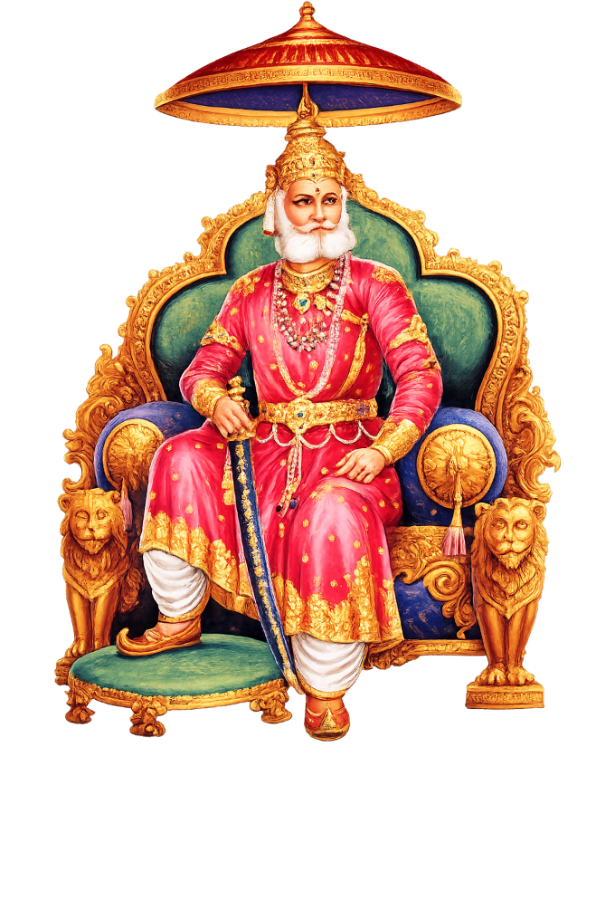

हमारे बारे मेंAbout Us
हमारा मिशनOur Mission
महाराजा अग्रसेन के सिद्धांतों—राष्ट्रवाद, समाजवाद, समानता और अहिंसा—का पालन करते हुए, परस्पर सहयोग के माध्यम से समाज के सभी वर्गों की सेवा एवं उत्थान करना।To follow the principles of Maharaja Agrasen—nationalism, socialism, equality, and non-violence—and strive to serve and uplift all sections of our community through mutual cooperation.
हमारा विजनOur Vision
एकजुट, समृद्ध और सुसंस्कृत समाज, जो 'एक ईंट और एक रुपया' के सिद्धांत से प्रेरित होकर लोकतांत्रिक शासन व्यवस्था, आर्थिक संतुलन और सामाजिक समानता के आदर्शों पर आधारित हो।A united, prosperous, and cultured society, built on the ideals of democratic governance, economic symmetry, and social equality, inspired by the 'One Brick and One Rupee' principle.
स्थापना:Founded: हमारी समिति दशकों से समाज के उत्थान के लिए समर्पित है।Our committee has been dedicated to the upliftment of society for decades.
सामाजिक सेवाSocial Service
सांस्कृतिक कार्यक्रमCultural Programs
सदस्य सहयोगMember Support
महाराजा अग्रसेनMaharaja Agrasen

महाराजा अग्रसेन का जीवन और आदर्शLife and Ideals of Maharaja Agrasen
महाराज अग्रसेन एक प्रसिद्ध सूर्यवंशी राजा थे जिन्होंने अग्रोहा पर शासन किया। उन्हें भारत में अग्रहरी और अग्रवाल समुदायों का संस्थापक भी माना जाता है। वे राष्ट्रवाद, समाजवाद, समानता और अहिंसा के अपने सिद्धांतों के लिए प्रसिद्ध थे। राजा का उनके राज्य की जनता बहुत सम्मान और आदर करती थी। Maharaj Agrasen was a famous Suravanshi king who ruled over Aghora. He is also believed to be the founder of Agrahari and Agrawal communities in India. He was famous for his principles of nationalism, socialism, equality and non-violence. The king was highly respected and admired by the people in his kingdom.
"अग्रवाल" शब्द दो शब्दों से मिलकर बना है: "अग्र" यानी अग्रसेन और "वाल" यानी "बालक" (पुत्र)। अग्रवाल का अर्थ है "अग्रसेन का पुत्र"। हिंदू पौराणिक कथाओं के अनुसार, भगवान शिव ने महाराज अग्रसेन को देवी लक्ष्मी के लिए तपस्या करने की सलाह दी थी। उनकी निष्ठा से प्रसन्न होकर देवी लक्ष्मी प्रकट हुईं और महाराज अग्रसेन से कहा कि वे अपनी प्रजा की समृद्धि के लिए व्यापार शुरू करें। तब से अग्रवाल समुदाय के लोग व्यापार की परंपरा का पालन करते हैं। The word “AGRAWAL” is the combination of two words “Agra” meaning Agrasen and wal implies “Balak” (SON). Agrawal implies the “Son of Agrasen”. According to Hindu mythology Maharaja Agrasen was advised by lord Shiva to observe Tapas for goddess Lakshmi. Pleased by his dedication, Goddess Lakshmi appeared and told Maharaja Agrasen to start business for the opulence of his people. Henceforth members of Agrawal community follow the tradition of business.
भगवान कृष्ण के समकालीन, उनका जन्म लगभग 5185 साल पहले प्रताप नगर के राजा वल्लभ के यहाँ हुआ था। उन्होंने नागवंश के राजा नागराज की बेटी राजकुमारी माधवी से विवाह किया और उनकी 18 संतानें हुईं, जिनसे अग्रवाल गोत्र अस्तित्व में आया। अग्रसेन जी ने महाभारत युद्ध में पांडवों की ओर से लड़ाई लड़ी थी। A contemporary of lord Krishna, he was born almost about 5185 years ago to king Vallabh of Pratap Nagar. He married Princess Madhavi, the daughter of King Nagraj of the Naghavansh dynasty, and had 18 children from whom Agrawal Gautra came into existence. Agrasen ji fought on the side of Pandavas in Mahabharata war.
अग्रसेन ने राजा नागराज कुमुद की बेटी माधवी के स्वयंवर में भाग लिया था। हालाँकि स्वर्ग के देवता और तूफ़ान व बारिश के स्वामी इंद्र भी माधवी से विवाह करना चाहते थे, लेकिन माधवी ने अग्रसेन को ही अपने पति के रूप में चुना। महाराज अग्रसेन ने 'एक ईंट और एक रुपया' का सिद्धांत घोषित किया। इसके अनुसार, शहर में आने वाले प्रत्येक नए परिवार को शहर में रहने वाले हर परिवार की ओर से एक ईंट और एक रुपया दिया जाना चाहिए। उन्हें ईंटों से अपना घर बनाना चाहिए और पैसे से व्यापार करना चाहिए। इस तरह महाराज अग्रसेन जी को समाजवाद के अग्रदूत के रूप में पहचाना गया। Agrasen participated in the swayamvara of Madhavi, the daughter of King Nagaraja Kumud. Although Indra, the God of heaven and lord of storms and rains also wanted to marry Madhavi, she chose Agrasen as her husband. Maharaja Agrasen announced the principle of 'one brick and one rupee'. According to which every new family coming to the city should be given one brick and one rupee on behalf of every family living in the city. They should build their house with bricks and do business with money. In this way Maharaja Agrasen ji was recognized as the pioneer of socialism.
महाराज अग्रसेन के 3 आदर्श 3 ideals of Maharaja Agrasen
- लोकतांत्रिक शासन व्यवस्थाDemocratic governance
- आर्थिक समानता और संतुलनEconomic equality and symmetry
- सामाजिक समानताSocial equality
अग्रसेन जयंती हिंदू समुदाय के अग्रहरी और अग्रवाल वर्गों द्वारा मनाया जाने वाला एक प्रसिद्ध उत्सव है। यह दिन उनके सम्मानित पूर्वज महाराज अग्रसेन के सम्मान और उनकी जयंती के उपलक्ष्य में पूरे उत्साह और भक्ति के साथ मनाया जाता है। अग्रसेन जयंती हिंदू महीने 'आश्विन' के शुक्ल पक्ष (चंद्रमा के उज्ज्वल पखवाड़े की अवधि) की 'एकम' (पहला दिन) को मनाई जाती है। Agrasen jayanti is a renowned event observed by the Agrahari and Agrawal sects of Hindu community. This day celebrated with full gaiety and devotion in the honour of their respected forefather Maharaja Agrasen and commemorates his, Birth anniversary. Agrasen jayanti is observed on the 'Ekam' (1st day) of the shukla paksha (the period of bright fortnight of moon) during the Hindu month of 'Ashwin'.
रोचक तथ्य Interesting Facts
- 24 सितंबर 1949 को भारत सरकार ने महाराजा अग्रसेन के नाम पर 24 पैसे का डाक टिकट जारी किया था। On 24th September 1949, a stamp of 24 paise was issued by the Government of India in the name of Maharaja Agrasen.
- 1919 में, भारत सरकार ने दक्षिण कोरिया से 360 करोड़ रुपये में एक विशेष तेल वाहक (जहाज) खरीदा, जिसका नाम "महाराजा अग्रसेन" रखा गया। In 1919, the Government of India purchased a special oil carrier (ship) from South Korea for Rs.360 crores, named "Maharaja Agrasen".
- नेशनल हाईवे-10 का आधिकारिक नाम महाराजा अग्रसेन के नाम पर रखा गया है। National Highway - 10 is officially named after Maharaja Agrasen.
- एक सर्वेक्षण के अनुसार, देश की कुल आयकर आय का 25% से अधिक हिस्सा अग्रसेन के वंशजों से आता है, जिनकी आबादी देश की कुल आबादी का केवल 1% है। कुल सामाजिक और धार्मिक दान का 82% हिस्सा इन्हीं पूर्वजों के वंशजों से आता है। भारत में कुल 14,000 गौशालाओं में से 12,000 गौशालाएं अग्रवंशी वैश्य समुदाय द्वारा चलाई जाती हैं। According to a survey, more than 25% of the country's total income tax is from the descendants of Agrasen. Whose population is just 1% of the country's population? 82% of the total social and religious donations are from ancestors. Out of a total of 14000 gaushalas in India, 12000 are run by Agrawanshi Vaishya community.
18 गोत्र18 Gotras
- गर्गGarg
- बंसलBansal
- बिंदलBindal
- भंदलBhandal
- धरणDharan
- ऐरणAiran
- गोयलGoyal
- जिंदलJindal
- कंसलKansal
- कुच्छलKuchhal
- मधुकुलMadhukul
- मंगलMangal
- मित्तलMittal
- नांगलNangal
- सिंघलSinghal
- तायलTayal
- तिंगलTingal
- गोयनGoyan